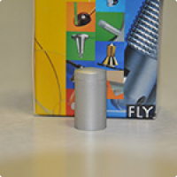

Дистанционные держатели
Дистанционные держатели KUNSTDÜRGER (Италия) ”KD” (металические)
- Дистанционные держатели
-
Таблички, указатели на стенах в коридорах. Мы встречаем их каждый день повсюду: в больницах , в офисах, гостиницах, банках и т.д. Разнообразные таблички и указатели, закрепленные при помощи держателей информируют нас о номере кабинета и имени чиновника, ведущего прием в этом кабинете. Таблички информируют нас о названиях организаций, часах работы офисов и контор, номеров кабинетов и названиях отделов организаций. И для того , чтобы эти таблички выглядели красиво служат дистанционные держатели.
Одним из основных приемов в оформлении табличек и вывесок являются дистанционные держатели. Они позволяют закреплять любые материалы на расстоянии от стены или двери.
Существует большое количество таких элементов крепления табличек:
- дистанционные держатели для скрытого крепления табличек;
- системы крепления табличек с подвесом на тросиках;
- системы крепления табличек на металлических стержнях.
Одними из ведущих производителей дистанционных держателей являются такие фирмы как KUNSTDÜRGER или ”KD”(Италия) и ROPRO (Нидерланды)
Дистанционные держатели KUNSTDÜRGER (Италия) ”KD” (металические)
Системы крепления табличек на тросах и стержнях производства компании KUNSTDÜRGER (Италия), имеют огромное количество разнообразных элементов соединяющих различные составляющие сложных табличек и указателей. Специальные элементы систем позволяют закреплять таблички не только параллельно стене, но крепить их перпендикулярно.
Материалы и отделка дистанционных держателей
Дистанционные держатели “KD” изготавливаются из высоокачественных пластика и металлов. Высококачественная нержавеющая сталь из которой изготавливаются держатели “KD” не подвержена коррозии и окислению, что позволяет крепить таблички на улице и сохранить привлекательный внешний вид крепления на долгое время.
Варианты внешнего покрытия дистанционных держателей “KD” крепления табличек не ограничены только «серебром». Доступны держатели для табличек с покрытием под золото и матовое серебро. Держатели для табличек изготовленные из АБС пластика выкрашиваются специальными красками под серебро, титан, золото и медь.
- “KD” Budget Fisso FBUD 1520
-
- держатель для крепления табличек к стене толщиной до 12 мм.
- расстояние от стены 20 мм
- держатель прикручивается к стене шурупом, а с верху закрывается декоративной заглушкой, что защищает от несанкционированного использования.
- бывают трех цветов: золото, хром, никель.
Наименование Выдерживает вес Размер FBUD 1520 CM BUDGET 15 кг. 15X20 FBUD 1520 CM BUDGET 15 кг. 15X20 - “KD” Fisso MIX FMX
-
- широкий выбор держателей для крепления табличек.
- Ø13mm, Ø19mm, Ø25mm, Ø30mm, Ø40mm
- расстояние от стены от 13мм до 50мм (в зависимости от диаметра), толщина стекла от 5мм до 25мм.
- бывают трех цветов: золото, хром, хром мат.
Наименование Выдерживает вес Размер FMX1930 M12AR MIX 15 кг. 19X30 FMX1930 M12AR MIX 15 кг. 19X30 FMX1930 M12AR MIX 15 кг. 19X30 FMX1930 M12AR MIX 15 кг. 19X30 - “KD” Fisso Steel FS
-
- держатель из высококачественной нержавеющей стали для крепления табличек к стене.
- расстояние от стены 15mm, 20mm, 25mm, 50mm.
- головка установливается в основании с помощью винта с внутренним шестигранником.
- Interlocksystem защищает от несанкционированного использования.
Наименование Выдерживает вес Размер FS1515 IX STEEL 15 кг. 15X15 FS2020 IX STEEL 15 кг. 20X20 - “KD” Fisso Midi F 1521
-
- держатель для крепления табличек толщиной до 11 мм к стене.
- расстояние от стены 21 мм
- головка устанавливается в основании с помощью винта с внутренним шестигранником.
- Interlocksystem защищает от несанкционированного использования.
- бывают трех цветов: золото, хром, хром мат.
Наименование Выдерживает вес Размер F1521 CM MIDI 15 кг. 15X21 F1521 GD MIDI 15 кг. 15X21 - “KD” Fisso Alu FMX
-

- алюминиевый держатель для крепления табличек к стене.
- расстояние от стены 13 мм и 20 мм, (Ø13mm), 18 мм (Ø18mm)
- головка имеет боковое отверстие для легкого вворачивания в основание.
- левая резьба защищaет от несанкционированного использования.
- цвет: серебро, золото, черный и титан
Наименование Выдерживает вес Размер FMX1320 AL MIX 15 кг. 13X20